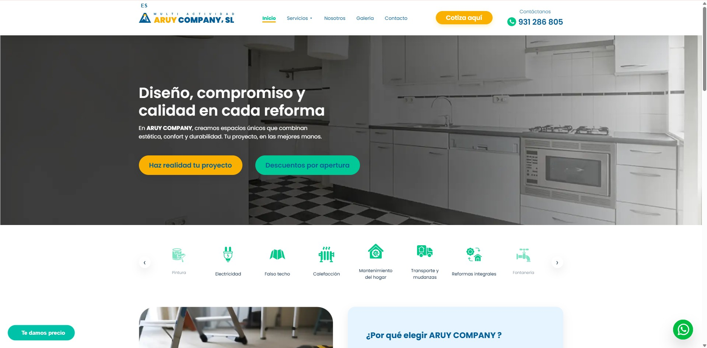
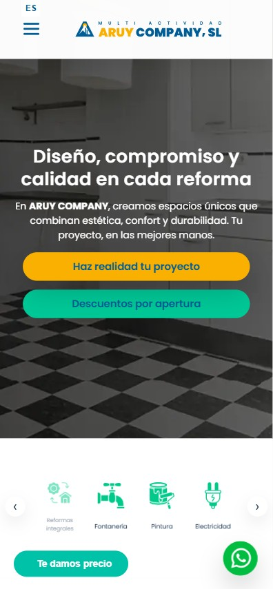
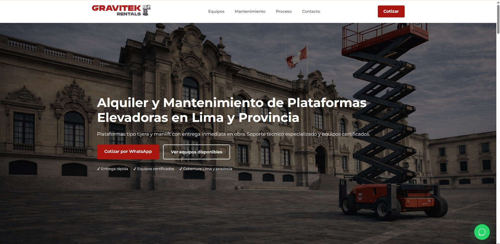
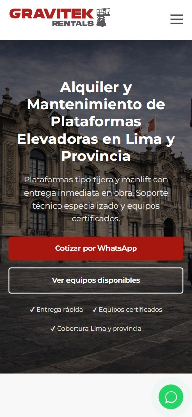
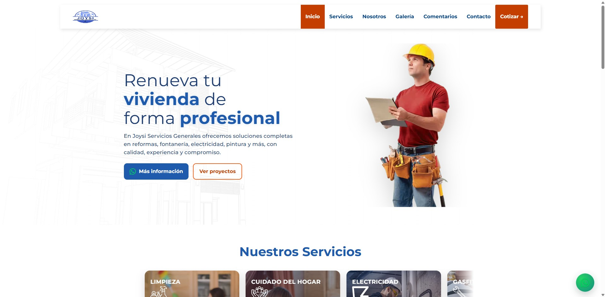
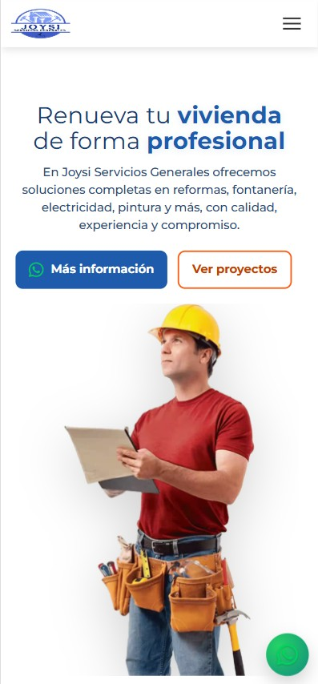

Diseño estratégico, desarrollo optimizado y enfoque en conversión. Creamos experiencias digitales modernas que generan resultados reales.
Xquis Digital es un estudio enfocado en crear experiencias web
modernas, rápidas y orientadas a resultados.
No solo diseñamos sitios, desarrollamos sistemas que posicionan
marcas, optimizan procesos y generan crecimiento real.
Creamos estructuras digitales estratégicas que no solo se ven bien, sino que generan resultados medibles.
Landing pages y sitios corporativos optimizados para conversión, posicionamiento y experiencia de usuario premium.
Tiendas online escalables con estructura pensada para vender, automatizar procesos y maximizar rendimiento.
Soluciones digitales personalizadas que optimizan procesos internos, reducen errores y mejoran la eficiencia operativa.
Velocidad, arquitectura y estructura avanzada preparada para buscadores y escalabilidad futura.






Creamos activos digitales que funcionan como herramientas de negocio.